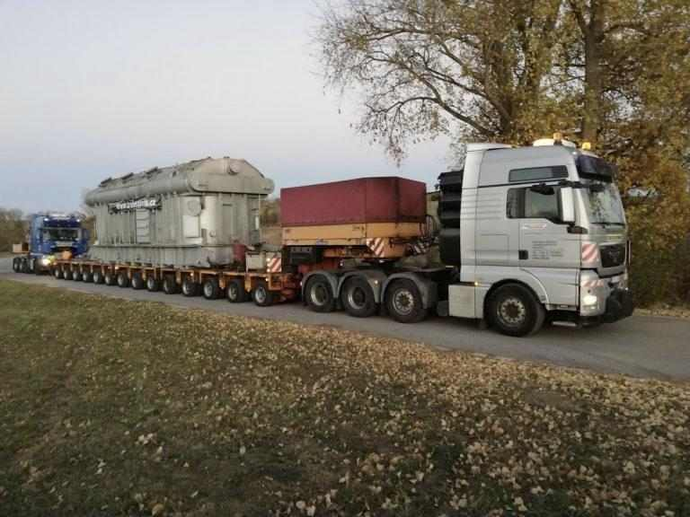
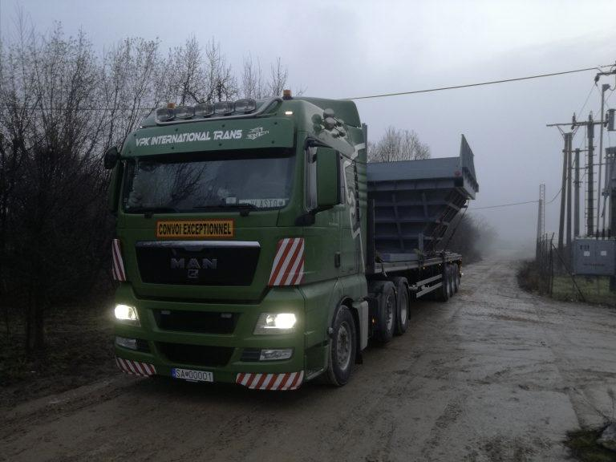
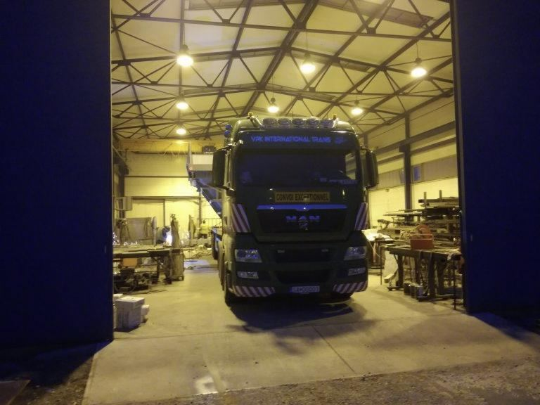
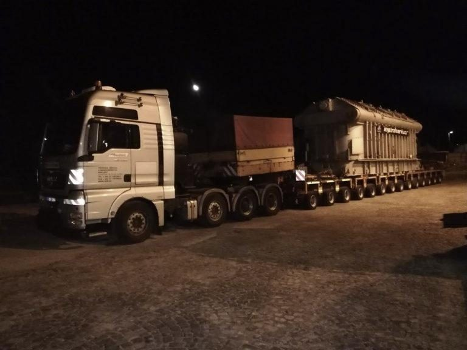

Odborné sprievody, povolenia a prieskum trás. Na trhu od roku 2003.
Nadrozmerným prepravám sa venujeme od roku 2003.
Vybavíme prepravné povolenia pre prepravy v rámci EÚ.
Zaťažiteľnosť mostov riešime pred výjazdom.
Sprievodné vozidlá a odborný sprievod nadrozmerných nákladov počas celej trasy.
Asistencie pri nakládkach a vykládkach na území Slovenskej republiky.
Vybavenie povolení na prepravy v rámci celej Európskej únie.
Zaťažiteľnosť mostov a ich prejazdnosť overujeme ešte pred výjazdom.



